to zero, so that the problem reduces to:
to zero, so that the problem reduces to:I completed my PhD in 1992 and have not followed academic developments since that time, so the work described here is probably outdated and makes no reference to more recent research.
Most of my thesis was devoted to a simple mathematical model comprising a forced harmonic oscillator whose motion is constrained by a hard obstacle, from which it rebounds instantaneously:
where 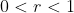
This can be nondimensionalised as follows:
which gives:
where
Because a coefficient of restitution of less than 1 is sufficient to introduce dissipation into the system, for most of my thesis I simplified further by setting the damping coefficient to zero, so that the problem reduces to:

The impact introduces a discontinuity into the system which makes it strongly nonlinear, so that it exhibits many of the complex behaviours associated with nonlinear dynamical systems.
A Poincaré map is a useful way of reducing a continuous dynamical system to a discrete system with one fewer dimensions. In this case the form of the problem naturally induces a map - which we call the impact map - which takes the phase (time modulo the forcing period) and velocity at one impact to the phase and velocity at the next impact. What makes it interesting is that it does not strictly conform to the textbook definition of a Poincaré map, because when impacts occur with zero velocity the trajectory in phase space is tangential to the surface . At points which map to zero-velocity impacts, the impact map is not only discontinuous but singular. This underlies many of the complex dynamics which are observed for some parameter ranges.
The domain (and range) of the impact map, the impact surface, is geometrically an infinite half-cylinder, since the impact velocities range over 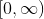, while the phase ranges over 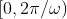.
Periodic motions can be classified by labelling them with two numbers, the number of impacts in a cycle and the number of forcing periods, so that a (m, n) orbit repeats itself after m impacts and n forcing cycles. The simplest of these are (1, n) orbits, which correspond to fixed points of the impact map. These can be extensively studied analytically and formulas can be obtained for the impact velocity Vn as the parameters ,  and r are varied.
and r are varied.
This reveals that, as  is varied while and r are held fixed, the Vn-response curve is an ellipse (or rather half an ellipse as negative Vn is of no interest), centred on the origin. As
is varied while and r are held fixed, the Vn-response curve is an ellipse (or rather half an ellipse as negative Vn is of no interest), centred on the origin. As  is varied, this ellipse rotates, so that its major axis is vertical for , is tilted into the negative
is varied, this ellipse rotates, so that its major axis is vertical for , is tilted into the negative  quadrant (for positive Vn) for 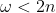 and into the positive
quadrant (for positive Vn) for 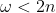 and into the positive  quadrant for 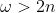. In the tilted cases, the lower branch of the half-ellipse always corresponds to dynamically unstable orbits. The point where the upper and lower branches meet corresponds to a saddle-node or fold bifurcation. As we vary
quadrant for 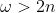. In the tilted cases, the lower branch of the half-ellipse always corresponds to dynamically unstable orbits. The point where the upper and lower branches meet corresponds to a saddle-node or fold bifurcation. As we vary  away from this point, the orbit corresponding to the upper branch will remain stable until either (i) it loses stability to a supercritical period-doubling bifurcation and is replaced by a (2, 2n) orbit or (ii) it is destroyed by the occurrence of an intervening impact, which makes the analytically-derived (1, n) orbit unphysical. Case (i) is typically the prelude to a period-doubling cascade of a kind familiar to anyone who has studied chaotic dynamical systems.
away from this point, the orbit corresponding to the upper branch will remain stable until either (i) it loses stability to a supercritical period-doubling bifurcation and is replaced by a (2, 2n) orbit or (ii) it is destroyed by the occurrence of an intervening impact, which makes the analytically-derived (1, n) orbit unphysical. Case (i) is typically the prelude to a period-doubling cascade of a kind familiar to anyone who has studied chaotic dynamical systems.
It turns out that, at least for small values of , forcing frequencies near the ‘resonant’ values 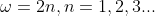 are associated with comparatively simple dynamics dominated by globally attracting (1, n) orbits, while the intervening regions of parameter space are characterised by much more complex behaviour, including chaotic attractors and multiple competing periodic orbits.
My supervisor, Chris Budd, coined the term ‘grazing’ for a kind of bifurcation in which a periodic orbit is destroyed by the occurrence of an intervening impact. At the bifurcation point, this intervening impact has zero velocity, hence the term ‘grazing’. This phenomenon can be investigated in terms of the geometry of the impact map by studying the set S of impact points which map to a zero velocity impact. This has the form of a ‘branched manifold’, i.e. a set of curves of codimension 1 which branch off each other at various points. If one draws a line transverse to this manifold and observes how the image of the impact map 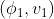 varies as one moves along the line, one finds that, as one crosses S from one direction (the ‘non-impact side’) v1 drops discontinuously to zero, while as one approaches S from the other direction (the ‘impact side’) it drops continuously to zero but at a rate which 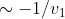 as 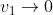. This results in a strong local distortion of the phase flow. It also means that much of the local dynamics can be understood by reference to a one-dimensional map.
The occurrence of intervening low-velocity impacts combined with the fact that, on the non-impact side, the dynamics continues to behave as if there were no intervening impact, helps to explain why for parameter values in the neighbourhood of a ‘grazing’ bifurcation of a stable (1, n) orbit, one often observes the appearance of competing (3, 3n) orbits.
A chapter of my thesis was devoted to a particularly striking instance of ‘grazing’, which occurs in the resonant case , which has certain simplifying features which make it particularly instructive.
‘Grazing’ occurs when a point 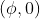 on the impact surface corresponds to a local maximum of the motion x(t). In general, there will also be a range of points for which the acceleration is positive and so the mass will be temporarily held motionless against the obstacle. If a low velocity impact occurs near this region, there will be an infinite sequence of low-velocity impacts converging in a finite time on a zero-velocity impact. This corresponds physically to a low-energy juddering of the mass against the obstacle. Our numerical simulation has to detect this behaviour and suitably truncate the infinite sequence. This behaviour can occur as part of a periodic orbit, in which case we label it 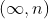.